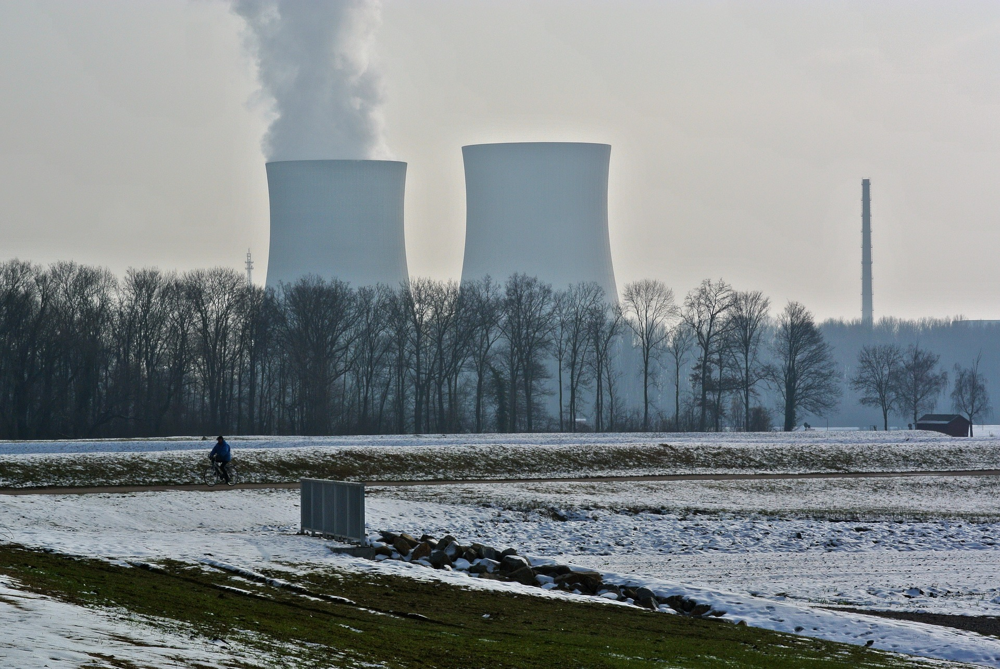
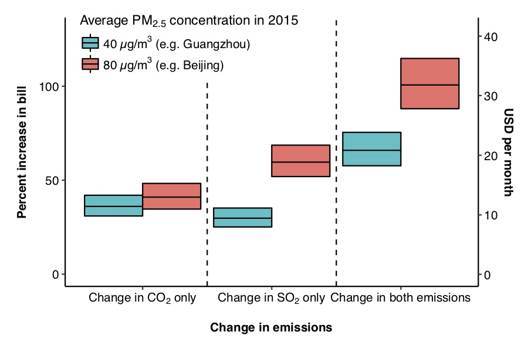
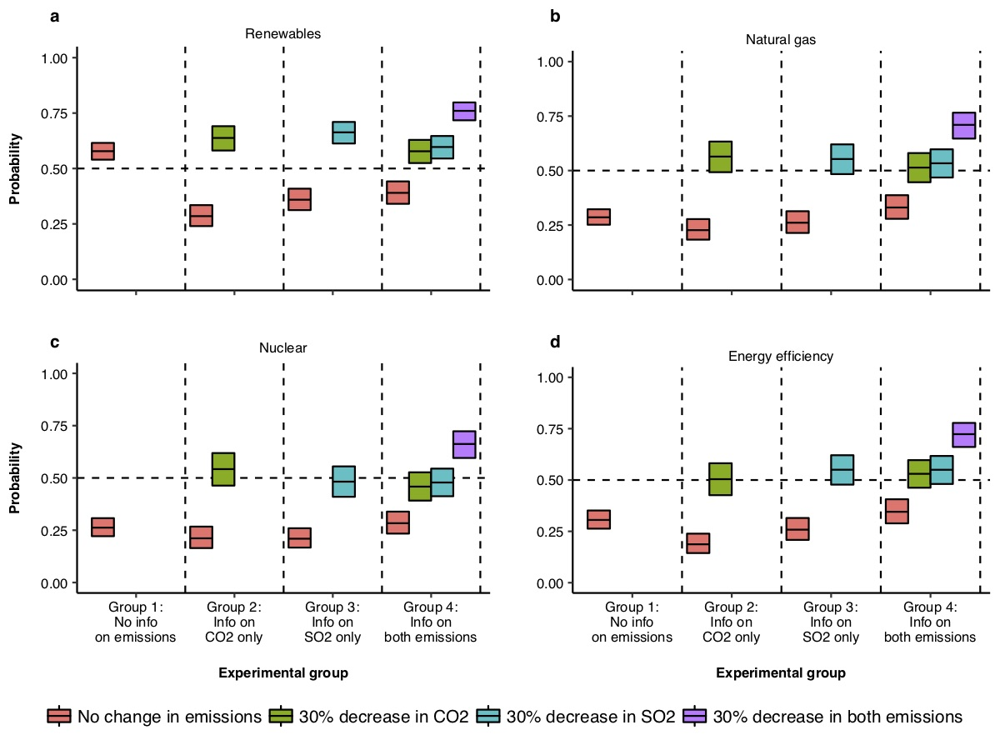
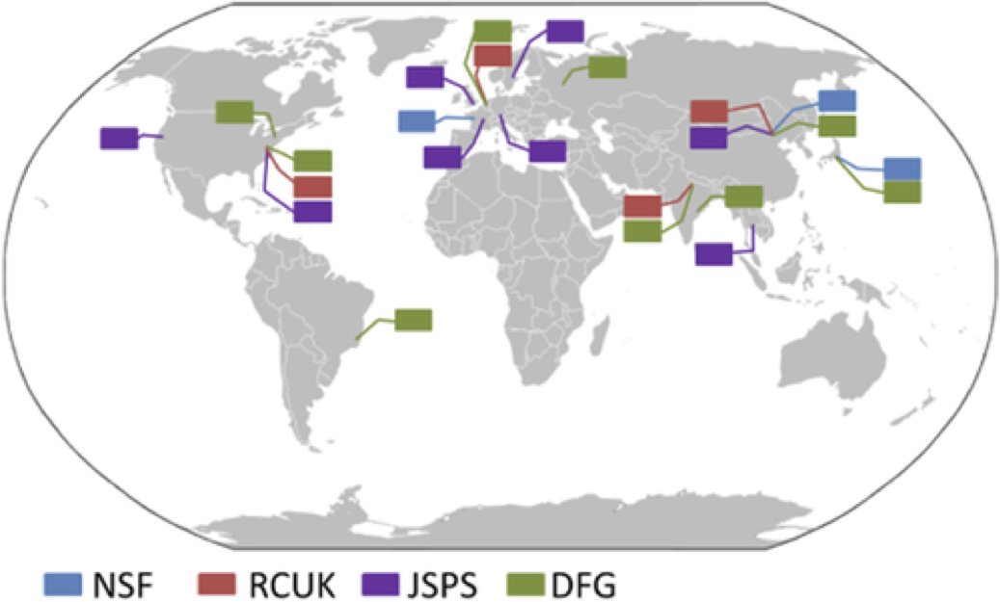

Projects
Peer-reviewed journal articles

Limits to deployment of nuclear power for decarbonization: Insights from public opinion
Energy Policy | June 2019
We deploy an experiment involving a large U.S. sample (N = 1,226) to disentangle public opposition due to the dread of nuclear power from opposition stemming from its actuarial risk (i.e. the observed number of deaths per kWh produced). Respondents who see a technology labeled as nuclear deploy 6.6 percentage points less nuclear power as a share of the U.S. electricity mix. This study helps illustrates that simply explaining on nuclear's prior safety record relative to other technologies is not sufficient for addressing public concerns to deploying additional nuclear to meet climate needs.

Support for emissions reductions based on immediate and long-term pollution exposure in China
Ecological Economics | April 2019
We conduct a discrete choice survey (N = 1,060) of urban residents from 10 Chinese cities, assessing how individuals compare electricity source, cost, and reduction of emissions related to climate change or air pollution. We observe that respondents in cities with the highest annual concentrations of particulate matter are willing to pay 30% more to clean up the air when compared to individuals living in less polluted cities, providing insight on some of the drivers of support for emissions reductions.
 Institutional influence on power sector investments: A case study of on- and off-grid energy in Kenya and Tanzania
Institutional influence on power sector investments: A case study of on- and off-grid energy in Kenya and Tanzania
Energy Research & Social Science | July 2018
Combining a multi-level perspective with project funding data from the Kenyan and Tanzanian energy sectors, we assess the extent to which these new off-grid technologies have been incorporated into the existing energy regimes in both countries. Although international development agencies have provided financial support for niche, off-grid companies, both global donors and the regime electricity sector operators in Kenya and Tanzania continue to favor on-grid and grid extension activities, and each country faces substantially different landscapes for encouraging such innovation.

The effect of providing climate and health information on support for alternative electricity portfolios
Environmental Research Letters | February 2018
We test how US participants' preferences change for emissions reductions change when climate change or health-related air pollution information is explicitly provided to them. We find that an average respondent would accept an increase of 19%–27% in their electricity bill if shown information stating that either CO2 or SO2 emissions are reduced by 30%, but would also accept an increase of 30%–40% in electricity bills when shown information stating that both pollutants are reduced by 30% simultaneously. These findings indicate that communicting both the climate and health-related benefits of emissions reductions can help bolster support for those reductions.

Support for International Collaboration in Research: The Role of the Overseas Offices of Basic Science Funders
Review of Policy Research | September 2014
The internationalization of science has prompted major science funding agencies to seek to further international cooperation in basic research through the use of outposts based outside of the agency's home country. This paper presents a typology of activities that fall under the rubric of international engagement in science, and critically examine the international offices of four leading basic research funding agencies and attempt to characterize and describe the distinct models that these agencies employ.
Other projects and reports
-
National Plan for Civil Earth Observations
Breakthrough Institute Report | July 2014
As a STPI fellow, I provided analytical and writing support to OSTP in the development of this report. -
How to Make Nuclear Cheap
Breakthrough Institute Report | June 2014
As a Breakthrough Generation fellow, I conducted the initial scoping and analysis that served as the foundation for this report. -
Department of Energy Technology Maturation Programs
Science & Technology Policy Institute Report | May 2013 -
Department of Energy Agreements for Commercializing Technology
Science & Technology Policy Institute Report | April 2013